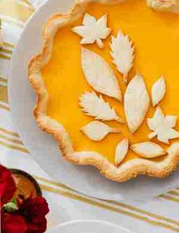
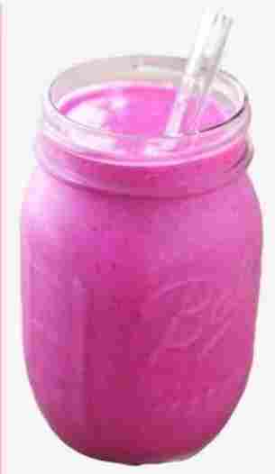

Cook for Your Stomach Cookbook!
Pumpkin Autumn Pie

Pumpkin Pie
What's orange, circular in shape and typically seen around
Thanksgiving? Exactly, PUMPKIN PIE! After finishing a course dinner,
pumpkin pie is a delicious reward. Each bite of pumpkin pie is
like a warm hug in dessert form, with a creamy embrace and a hint of
toasty spices, YUM!
JUMP TO RECIPE
with its spiced, creamy filling and flaky crust, it’s the epitome
of autumn comfort. Imagine the aroma of cinnamon, nutmeg, and
cloves wafting through your kitchen as it bakes.
Can't you practically taste it?
RECIPE!
- 2 Sharp apples (any kind)
-
2 Handfuls herbs (rosemary, thyme, parsley, or sweet marjoram)
- 6 Tablespoons (85g) salted butter
- 1/4 Cup (60ml) sack or sherry
- Any type of Crust (Save extra dough for later!)
Instructions!
-
Set the oven to 425F (220C) and line a pie dish
with your pie dough.
-
Peel the pumpkin, then remove the stem and seeds,
and quarter it. Slice each piece into thin slices,
about 1/4 inch thick. Repeat this process with the apples.
-
Put 2 tablespoons of the butter into a frying pan and set over
medium heat. Note that, depending on the amount of pumpkin you
fry, you may require more butter; you can also use lard or
vegetable oil.
-
Then mix the herbs into the beaten eggs and dip the pumpkin
slices into the egg, coating them lightly. Then place them into
the frying pan and fry for 10 minutes, or until the pumpkin is
quite soft. Depending on the size of your pumpkin, you may need
to do this in several batches. The pumpkin should not be more
than 3 layers thick in the pan.
-
While the pumpkin fries, line the bottom of your pie crust with
the apples. Once the pumpkin is cooked, place it in a
bowl with 2 tablespoons of the butter, along with the
raisins, currants, sugar, and the sherry or sack.
Mix everything together and pour over the apples, smoothing the
top.
-
Bake for 20 minutes at 425°F (220°C), then reduce heat to 375°F
(190°C) and bake 40-50 minutes longer, or until the top of the
pie is bubbling.
-
With the extra dough, start placing the dough into a autumn
shape cookie cutter. gently powder the dough and began adding
maple flavor. Start baking it around (300F) degrees in the oven.
Once down you must let it out of the oven and let those dough
cool down.
-
Remove from the oven and set a on a wire rack. Scatter the 2
remaining tablespoons of butter on the top of the pie and allow
to melt in. Cool completely before slicing.
Enjoy the delicious flavor of PIE!
Others you might like
Pink PUNCH Smoothie
-
Butter Noodles(So simple is near Pink punch smoothie)
Pink Punch Smoothie!

Pink Punch Smoothie
JUMP DOWN FOR THE DRINK
Usually made from a combination of fruits including; bananas,
raspberries, and strawberries, a pink punch smoothie is a
colorful and delicious beverage.
Often, yogurt or coconut milk is added for a creamy texture,
while a touch of honey or agave nectar enhances the natural
sweetness.The end product is a beautifully pink frothy drink
that is as aesthetically pleasing as it is delicious!
Ingredients!
- 1 Cup of Coconut Milk
- 1/2 cup frozen mango and frozen raspberries
- 1/2 Cup frozen pineapple and 1 blender
Instructions!
Peel the frozen bananas, pineapples, and mangos, Then you
slice them into little peices. Once done you add your fruits
into the blender.
Add your coconut milk and raspberries into the blender.
I recommend doing the 1 to 2 minutes trick. BINGO! it’s ready
to drink!
Butter Noodles

Butter Noodles
Down for recipe
The creamy aroma of freshly cooked butter noodles filled the
kitchen
with love that never goes away!
LIST!
- Fresh herbs and a little lemon juice (optional)
Instructions!
-
Boil your noodles until soften. (Add salt and use less water to
make your noodles extra starchy)
-
grab a half cup of said water while dumping out the rest
-
Place the noodles back to the pot you used and add in unsalted
butter.
-
Add in a few garlic powder or garlic cloves to your pot and mix
once more until the butter and garlic come together, giving
the pasta that creamy look!
YOUr butter pasta has been completed!